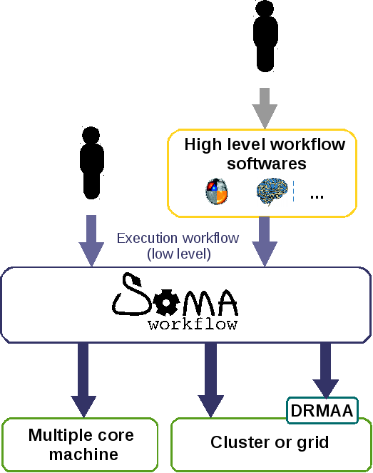

Soma-workflow concepts¶
Soma-workflow concepts
Overview¶
Soma-workflow was built to make easier the use of parallel computing resources for researchers.
Although Soma-workflow can be used to run individual jobs, it focuses on the execution of coarse-grained parallelized computational processes which are made of “long” sub-tasks (from about a minute to several days or weeks) which do not need to communicate together.
The coarse-grained parallelized computational processes are described by executable workflows. Each sub-task is described by a program command line (any program) and is called job. A workflow description includes the definition of a set of job and their execution dependencies.

Workflow example. The jobs are represented by gray boxes and the dependencies by arrows. A workflow organizes the execution of a set of jobs defining execution dependencies between jobs. A dependency from a job A to a job B means that the job A will not start before the job B is done.
These workflows can be created directly by the user or generated by external software which provide a higher level description of workflows (semantic description of sub-task, typed input and output...), like BrainVISA for example. See Workflow creation API.
Position of Soma-workflow: the workflows can be created by user or generated by external software.

Example of the simple creation a workflow using the Python API.
{kind=link}
Soma-workflow interacts with computing resources, to execute, control and monitor workflows and jobs:
- execution: Soma-workflow submits automatically each workflow job as soon as possible considering the execution dependencies.
- monitoring: the current status of each job is available at any time (in the queue, running, done...)
- control: the jobs can be canceled or killed. The workflows can be stopped and restarted.
All these functionalities are available using the Python API or the Graphical User Interface (GUI). The GUI is especially of interest to monitor workflows execution.
With the same interfaces (API and GUI), Soma-workflow enables the interaction with a wide range of computing resources:
- multiple core machine
- cluster via DRMAA (unified interface for DRMS)
- New in version 2.4: cluster via MPI (beta version), c.f. MPI workflow runner —beta—
Note that Soma-workflow is not a resource manager it has to interact with the system managing the computing resource (DRMS: Distributed Resource Management System) if it exists.
Soma-workflow enables the user to use remote computing resources. The communication is done transparently for the user and securely within a ssh tunnel. In case the computing resource and the user’s machine do not have a shared file system, Soma-workflow provides several tools:
- File transfers: allow the transfer of files or directories from or to the remote resource. The file transfers status are taken into account when a workflow is executed.
- Shared resource path: maps a path which is valid on the user machine with a path which is valid on the computing resource thanks to “translations” files.
The file transfer and shared resource path objects can be used instead of any path in the definition of jobs or workflows (see Examples).
Quick start with the mono process application¶
To provide you quickly with a functional application, your own multiple core machine can be used directly and without any configuration to distribute computation.
See also
Soma-workflow main page for installation.
Soma-workflow runs as a regular mono process application on your local machine. In this configuration Soma-workflow should not be stopped while workflows or jobs are running. If the application is closed, the workflow execution is stopped and the current running jobs might be lost if you are using a cluster (on some systems you will need to kill the jobs using the DRMS command). However, you will be able to restart the workflow in an other session.
Soma-workflow can be used as a mono process application on clusters too (see configuration and installation section). The application must run on a machine which is configured for submission.
More features with the client-server application¶
Compared to the mono process application, the client-server mode introduces two interesting features:
- Remote access to computing resource through a client application.
- Disconnections: the client application can be closed at any time, it won’t stop the execution of workflows.
{kind=link}
Overview of soma-workflow architecture in the client-server mode
There are three main processes in the client-server mode:
- The workflow controller process runs on the client side (on the user machine). When it is started, it connects to the remote machine and creates a workflow engine process. The two processes communicate together through a secured channel (ssh tunnel).
- The workflow engine runs on the computing resource side with the user’s rights (no admin rights). It processes the submitted workflows, submit, control and monitor jobs. It also updates the soma-workflow database at regular time interval with the status of the jobs, workflows and file transfers.
- The workflow database server runs on the computing resource side as a soma-workflow administrator user (no need to be the root user, not any special rights are needed). It stores and queries all the informations about file transfers, jobs and workflows, to and from the soma-workflow database file.
When the client application is closed (the workflow controller process stops), the workflow engine process keeps on running until the submitted workflows and jobs are done.
Each time a client application starts, a workflow engine process is created on the computing resource side. If no workflow or job were submitted with the client application or if they all ended, the workflow engine process stops as soon as the client application is closed.
File Transfer¶
The file transfers are optional. However, they can be useful when the user’s file system is not shared with the computing resource.
The file transfer objects allow the transfer of files or directories to and from the computing resource file system.
A file transfer object is a mapping between a file path which is valid on the user file system and a file path which is valid on the computing resource file system. There is no need for the user to specify a valid path on the computing resource. Soma-workflow handles the choice of this path within a configured directory.
The file transfer object can be used instead of any regular path in the definitions of jobs and workflows. The jobs using file transfers in their program command line, has to state which file transfers are input, output or both. That way soma-workflow waits for all the input files to exist on the computing resource before submitting the job to the resource.
See also
file transfer examples in the example section.

Table Of Contents
Previous topic
Soma-workflow: A unified and simple interface to parallel computing resource